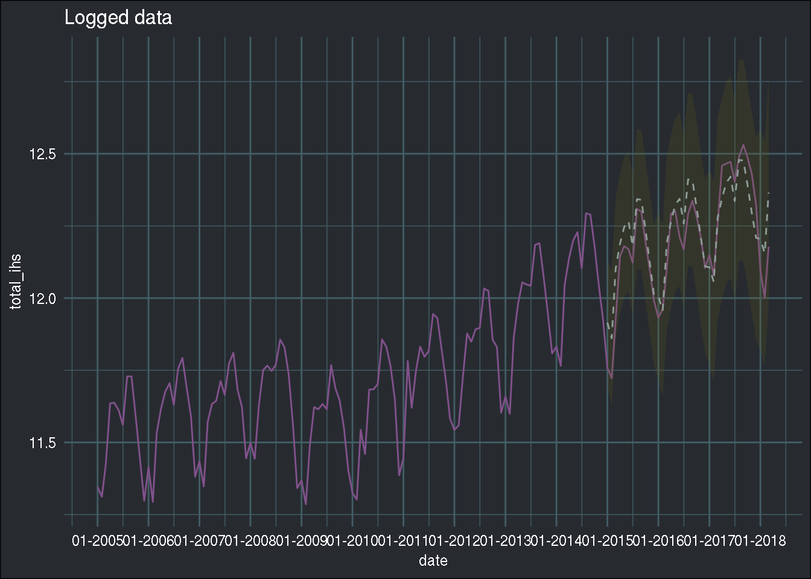

Searching for the optimal hyper-parameters of an ARIMA model in parallel: the tidy gridsearch approach
November 15, 2018

Introduction
In this blog post, I’ll use the data that I cleaned in a previous blog post, which you can download here. If you want to follow along, download the monthly data.
In the previous blog post, I used the auto.arima() function to very quickly get a “good-enough”
model to predict future monthly total passengers flying from LuxAirport. “Good-enough” models can
be all you need in a lot of situations, but perhaps you’d like to have a better model. I will show
here how you can get a better model by searching through a grid of hyper-parameters.
This blog post was partially inspired by: https://drsimonj.svbtle.com/grid-search-in-the-tidyverse
The problem
SARIMA models have a lot of hyper-parameters, 7 in total! Three trend hyper-parameters, p, d, q, same as for an ARIMA model, and four seasonal hyper-parameters, P, D, Q, S. The traditional way t o search for these hyper-parameters is the so-called Box-Jenkins method. You can read about it here. This method was described in a 1970 book, Time series analysis: Forecasting and control by Box and Jenkins. The method requires that you first prepare the data by logging it and differencing it, in order to make the time series stationary. You then need to analyze ACF and PACF plots, in order to determine the right amount of lags… It take some time, but this method made sense in a time were computing power was very expensive. Today, we can simply let our computer search through thousands of models, check memes on the internet, and come back to the best fit. This blog post is for you, the busy data scientist meme connoisseurs who cannot waste time with theory and other such useless time drains, when there are literally thousands of new memes being created and shared every day. Every second counts. To determine what model is best, I will do pseudo out-of-sample forecasting and compute the RMSE for each model. I will then choose the model that has the lowest RMSE.
Setup
Let’s first load some libraries:
library(tidyverse)
library(forecast)
library(lubridate)
library(furrr)
library(tsibble)
library(brotools)
ihs <- function(x){
log(x + sqrt(x**2 + 1))
}Now, let’s load the data:
avia_clean_monthly <- read_csv("https://raw.githubusercontent.com/b-rodrigues/avia_par_lu/master/avia_clean_monthy.csv")## Parsed with column specification:
## cols(
## destination = col_character(),
## date = col_date(format = ""),
## passengers = col_double()
## )Let’s split the data into a training set and into a testing set:
avia_clean_train <- avia_clean_monthly %>%
select(date, passengers) %>%
filter(year(date) < 2015) %>%
group_by(date) %>%
summarise(total_passengers = sum(passengers)) %>%
pull(total_passengers) %>%
ts(., frequency = 12, start = c(2005, 1))
avia_clean_test <- avia_clean_monthly %>%
select(date, passengers) %>%
filter(year(date) >= 2015) %>%
group_by(date) %>%
summarise(total_passengers = sum(passengers)) %>%
pull(total_passengers) %>%
ts(., frequency = 12, start = c(2015, 1))
logged_train_data <- ihs(avia_clean_train)
logged_test_data <- ihs(avia_clean_test)I also define a helper function:
to_tibble <- function(forecast_object){
point_estimate <- forecast_object$mean %>%
as_tsibble() %>%
rename(point_estimate = value,
date = index)
upper <- forecast_object$upper %>%
as_tsibble() %>%
spread(key, value) %>%
rename(date = index,
upper80 = `80%`,
upper95 = `95%`)
lower <- forecast_object$lower %>%
as_tsibble() %>%
spread(key, value) %>%
rename(date = index,
lower80 = `80%`,
lower95 = `95%`)
reduce(list(point_estimate, upper, lower), full_join)
}This function takes a forecast object as argument, and returns a nice tibble. This will be useful
later, and is based on the code I already used in my previous
blog post.
Now, let’s take a closer look at the arima() function:
ARIMA Modelling of Time Series
Description
Fit an ARIMA model to a univariate time series.
Usage
arima(x, order = c(0L, 0L, 0L),
seasonal = list(order = c(0L, 0L, 0L), period = NA),
xreg = NULL, include.mean = TRUE,
transform.pars = TRUE,
fixed = NULL, init = NULL,
method = c("CSS-ML", "ML", "CSS"), n.cond,
SSinit = c("Gardner1980", "Rossignol2011"),
optim.method = "BFGS",
optim.control = list(), kappa = 1e6)The user is supposed to enter the hyper-parameters as two lists, one called order for p, d, q
and one called seasonal for P, D, Q, S. So what we need is to define these lists:
order_list <- list("p" = seq(0, 3),
"d" = seq(0, 2),
"q" = seq(0, 3)) %>%
cross() %>%
map(lift(c))I first start with order_list. This list has 3 elements, “p”, “d” and “q”. Each element is a
sequence from 0 to 3 (2 in the case of “d”). When I pass this list to purrr::cross() I get the
product set of the starting list, so in this case a list of 4*3*4 = 48 elements. However, this
list looks pretty bad:
list("p" = seq(0, 3),
"d" = seq(0, 2),
"q" = seq(0, 3)) %>%
cross() %>%
head(3)## [[1]]
## [[1]]$p
## [1] 0
##
## [[1]]$d
## [1] 0
##
## [[1]]$q
## [1] 0
##
##
## [[2]]
## [[2]]$p
## [1] 1
##
## [[2]]$d
## [1] 0
##
## [[2]]$q
## [1] 0
##
##
## [[3]]
## [[3]]$p
## [1] 2
##
## [[3]]$d
## [1] 0
##
## [[3]]$q
## [1] 0I would like to have something like this instead:
[[1]]
p d q
0 0 0
[[2]]
p d q
1 0 0
[[3]]
p d q
2 0 0 This is possible with the last line, map(lift(c)). There’s a lot going on in this very small
line of code. First of all, there’s map(). map() iterates over lists, and applies a function,
in this case lift(c). purrr::lift() is a very interesting function that lifts the domain of
definition of a function from one type of input to another. The function whose input I am lifting
is c(). So now, c() can take a list instead of a vector. Compare the following:
# The usual
c("a", "b")## [1] "a" "b"# Nothing happens
c(list("a", "b"))## [[1]]
## [1] "a"
##
## [[2]]
## [1] "b"# Magic happens
lift(c)(list("a", "b"))## [1] "a" "b"So order_list is exactly what I wanted:
head(order_list)## [[1]]
## p d q
## 0 0 0
##
## [[2]]
## p d q
## 1 0 0
##
## [[3]]
## p d q
## 2 0 0
##
## [[4]]
## p d q
## 3 0 0
##
## [[5]]
## p d q
## 0 1 0
##
## [[6]]
## p d q
## 1 1 0I do the same for season_list:
season_list <- list("P" = seq(0, 3),
"D" = seq(0, 2),
"Q" = seq(0, 3),
"period" = 12) %>%
cross() %>%
map(lift(c))I now coerce these two lists of vectors to tibbles:
orderdf <- tibble("order" = order_list)
seasondf <- tibble("season" = season_list)And I can now finally create the grid of hyper-parameters:
hyper_parameters_df <- crossing(orderdf, seasondf)
nrows <- nrow(hyper_parameters_df)
head(hyper_parameters_df)## # A tibble: 6 x 2
## order season
## <list> <list>
## 1 <int [3]> <dbl [4]>
## 2 <int [3]> <dbl [4]>
## 3 <int [3]> <dbl [4]>
## 4 <int [3]> <dbl [4]>
## 5 <int [3]> <dbl [4]>
## 6 <int [3]> <dbl [4]>The hyper_parameters_df data frame has 2304 rows, meaning, I will now estimate 2304
models, and will do so in parallel. Let’s just take a quick look at the internals of hyper_parameters_df:
glimpse(hyper_parameters_df)## Observations: 2,304
## Variables: 2
## $ order <list> [<0, 0, 0>, <0, 0, 0>, <0, 0, 0>, <0, 0, 0>, <0, 0, 0>, …
## $ season <list> [<0, 0, 0, 12>, <1, 0, 0, 12>, <2, 0, 0, 12>, <3, 0, 0, …So in the order column, the vector 0, 0, 0 is repeated as many times as there are combinations
of P, D, Q, S for season. Same for all the other vectors of the order column.
Training the models
Because training these models might take some time, I will use the fantastic {furrr} package
by Davis Vaughan to train the arima() function in parallel.
For this, I first define 8 workers:
plan(multiprocess, workers = 8)And then I run the code:
tic <- Sys.time()
models_df <- hyper_parameters_df %>%
mutate(models = future_map2(.x = order,
.y = season,
~possibly(arima, otherwise = NULL)(x = logged_train_data,
order = .x, seasonal = .y)))
running_time <- Sys.time() - ticI use future_map2(), which is just like map2() but running in parallel.
I add a new column to the data called models, which will contain the models trained over all the
different combinations of order and season. The models are trained on the logged_train_data.
Training the 2304 models took 18 minutes, which is
plenty of time to browse the latest memes, but still quick enough that it justifies the whole approach.
Let’s take a look at the models_df object:
head(models_df)## # A tibble: 6 x 3
## order season models
## <list> <list> <list>
## 1 <int [3]> <dbl [4]> <Arima>
## 2 <int [3]> <dbl [4]> <Arima>
## 3 <int [3]> <dbl [4]> <Arima>
## 4 <int [3]> <dbl [4]> <Arima>
## 5 <int [3]> <dbl [4]> <Arima>
## 6 <int [3]> <dbl [4]> <Arima>As you can see, the models column contains all the trained models. The model on the first row,
was trained with the hyperparameters of row 1, and so on. But, our work is not over! We now need
to find the best model. First, I add a new column to the tibble, which contains the forecast. From
the forecast, I extract the point estimate:
models_df %>%
mutate(forecast = map(models, ~possibly(forecast, otherwise = NULL)(., h = 39))) %>%
mutate(point_forecast = map(forecast, ~.$`mean`)) %>%
....You have to be familiar with a forecast object to understand the last line: a forecast object
is a list with certain elements, the point estimates, the confidence intervals, and so on. To get
the point estimates, I have to extract the “mean” element from the list. Hence the weird ~.$mean.
Then I need to add a new list-column, where each element is the vector of true values, meaning the data
from 2015 to 2018. Because I have to add it as a list of size 2304, I do that with purrr::rerun():
rerun(5, c("a", "b", "c"))## [[1]]
## [1] "a" "b" "c"
##
## [[2]]
## [1] "a" "b" "c"
##
## [[3]]
## [1] "a" "b" "c"
##
## [[4]]
## [1] "a" "b" "c"
##
## [[5]]
## [1] "a" "b" "c"It is then easy to compute the RMSE, which I add as a column to the original data:
... %>%
mutate(true_value = rerun(nrows, logged_test_data)) %>%
mutate(rmse = map2_dbl(point_forecast, true_value,
~sqrt(mean((.x - .y) ** 2))))The whole workflow is here:
models_df <- models_df %>%
mutate(forecast = map(models, ~possibly(forecast, otherwise = NULL)(., h = 39))) %>%
mutate(point_forecast = map(forecast, ~.$`mean`)) %>%
mutate(true_value = rerun(nrows, logged_test_data)) %>%
mutate(rmse = map2_dbl(point_forecast, true_value,
~sqrt(mean((.x - .y) ** 2))))This is how models_df looks now:
head(models_df)## # A tibble: 6 x 7
## order season models forecast point_forecast true_value rmse
## <list> <list> <list> <list> <list> <list> <dbl>
## 1 <int [3]> <dbl [4]> <Arima> <forecast> <ts> <ts> 0.525
## 2 <int [3]> <dbl [4]> <Arima> <forecast> <ts> <ts> 0.236
## 3 <int [3]> <dbl [4]> <Arima> <forecast> <ts> <ts> 0.235
## 4 <int [3]> <dbl [4]> <Arima> <forecast> <ts> <ts> 0.217
## 5 <int [3]> <dbl [4]> <Arima> <forecast> <ts> <ts> 0.190
## 6 <int [3]> <dbl [4]> <Arima> <forecast> <ts> <ts> 0.174Now, I can finally select the best performing model. I select the model with minimum RMSE:
best_model <- models_df %>%
filter(rmse == min(rmse, na.rm = TRUE))And save the forecast into a new variable, as a tibble, using my to_tibble() function:
(best_model_forecast <- to_tibble(best_model$forecast[[1]]))## Joining, by = "date"
## Joining, by = "date"## # A tsibble: 39 x 6 [1M]
## date point_estimate upper80 upper95 lower80 lower95
## <mth> <dbl> <dbl> <dbl> <dbl> <dbl>
## 1 2015 Jan 11.9 12.1 12.1 11.8 11.7
## 2 2015 Feb 11.9 12.0 12.1 11.7 11.6
## 3 2015 Mar 12.1 12.3 12.3 11.9 11.9
## 4 2015 Apr 12.2 12.3 12.4 12.0 11.9
## 5 2015 May 12.2 12.4 12.5 12.1 12.0
## 6 2015 Jun 12.3 12.4 12.5 12.1 12.0
## 7 2015 Jul 12.2 12.3 12.4 12.0 11.9
## 8 2015 Aug 12.3 12.5 12.6 12.2 12.1
## 9 2015 Sep 12.3 12.5 12.6 12.2 12.1
## 10 2015 Oct 12.2 12.4 12.5 12.1 12.0
## # … with 29 more rowsAnd now, I can plot it:
avia_clean_monthly %>%
group_by(date) %>%
summarise(total = sum(passengers)) %>%
mutate(total_ihs = ihs(total)) %>%
ggplot() +
ggtitle("Logged data") +
geom_line(aes(y = total_ihs, x = date), colour = "#82518c") +
scale_x_date(date_breaks = "1 year", date_labels = "%m-%Y") +
geom_ribbon(data = best_model_forecast, aes(x = date, ymin = lower95, ymax = upper95),
fill = "#666018", alpha = 0.2) +
geom_line(data = best_model_forecast, aes(x = date, y = point_estimate), linetype = 2, colour = "#8e9d98") +
theme_blog()
Compared to the previous blog post, the
dotted line now seems to follow the true line even better! However, this is not suprising, as I
am using the test set as a validation set, which might lead to overfitting the hyperparameters
to the test set. Also, I am not saying that you should always do a gridsearch whenever you have a
problem like this one. In the case of univariate time series, I am still doubtful that a gridsearch like this is really necessary. The goal of this blog post was not to teach you how to look for
hyperparameters per se, but more to show you how to do a grid search the tidy way. I’ll be writing
about proper hyperparameter optimization in a future blog post.
Also, the other thing I wanted to show was the power of {furrr}.
Hope you enjoyed! If you found this blog post useful, you might want to follow me on twitter for blog post updates or buy me an espresso.